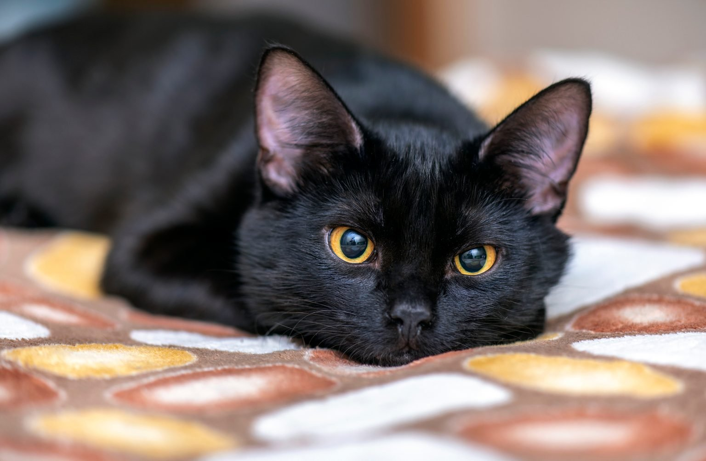
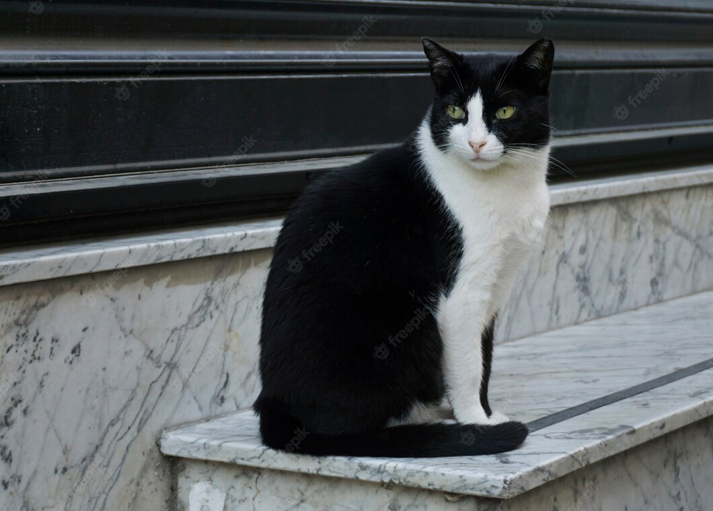
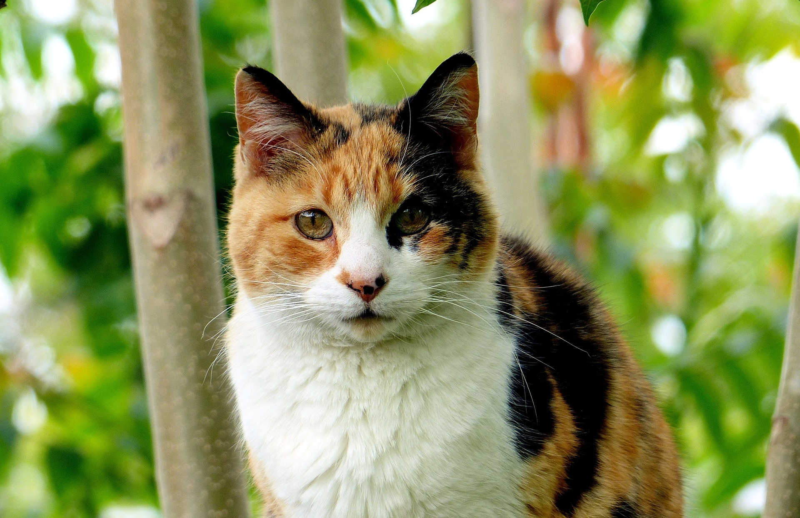
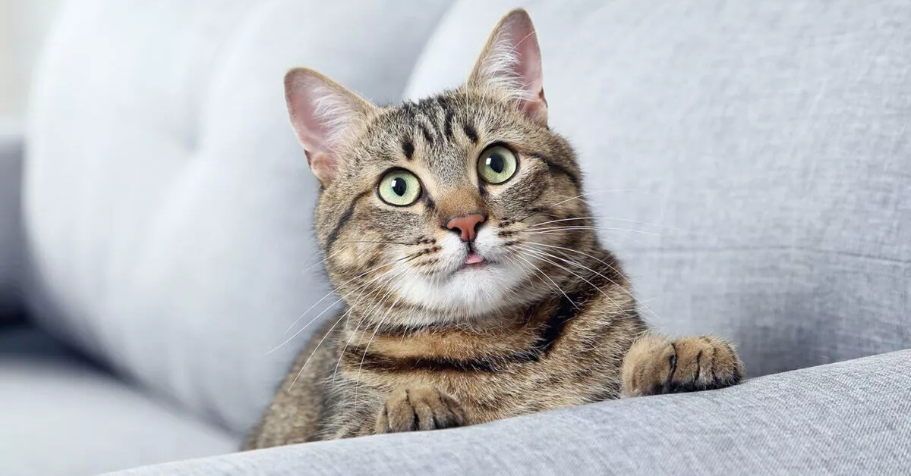

They even come in different colors!

Solid Color

Bicolor

Calico / Tricolor

Tabby Cats
"In ancient times, cats were worshipped as gods; They have not forgotten this"
-Terry Pratchett.Call to action! It's time!
Sign up and adopt a kitty now!